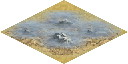

Misty mountains
Named after J.R.R Tolkien's Middle Earth mountain chain, these type
of mountains differ from normal Martian mountains because of
the extreme water vapor that covers them, which also makes traveling
these heights extremely difficult.
Iron and stone resources on them may provide useful if mined, not
surprisingly they yield no food for Martian settlers.

| Movement cost |
8 |
| Defence percentage |
100 |
| Resource |
Production |
| Stone |
6 |
| Iron |
5 |